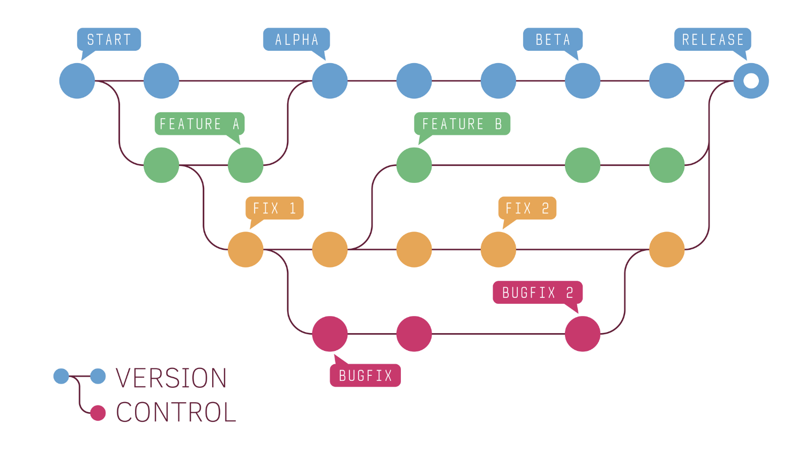
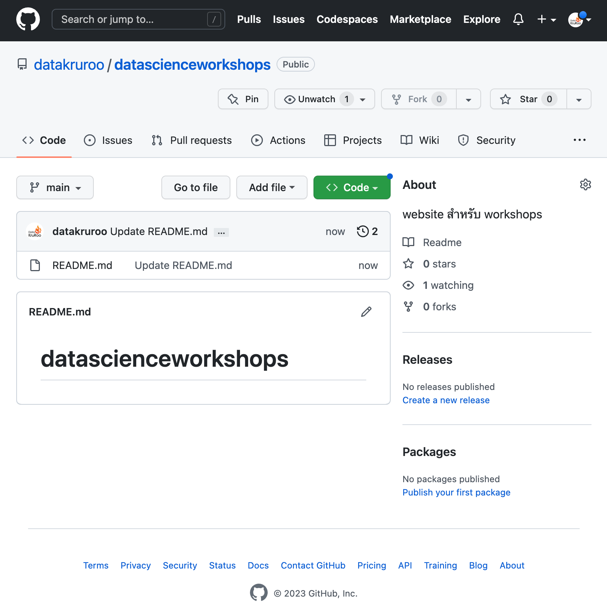
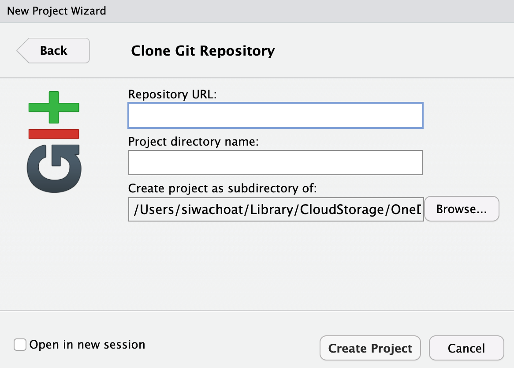
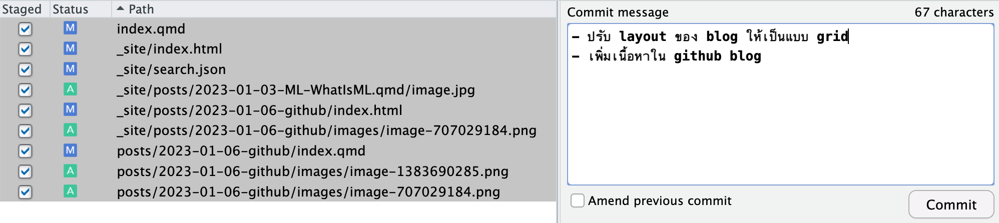

GitHub คืออะไร?
GitHub เป็นบริการประเภท cloud-based hosting มีวัตถุประสงค์หลัก ๆ คือให้ผู้ใช้เก็บบันทึกและติดตามการดำเนินงาน/โปรเจคต่าง ๆ (เรียกว่า version control) ในท้องตลาดไม่ได้มีเพียง GitHub เจ้าเดียวที่ให้บริการแบบนี้ยังมีเจ้าอื่นอีก เช่น GitLab, BitBucket เป็นต้น อย่างไรก็ตาม GitHub เป็นเจ้าที่ได้รับความนิยมสูงที่สุดในปัจจุบัน
Version control
version control เป็นโปรแกรม/ระบบที่ช่วยผู้ใช้ในการจัดเก็บและติดตามการเปลี่ยนแปลงที่เกิดขึ้นกับไฟล์งานของโปรเจคซึ่งจะมีเพียงไฟล์งานเดียวหรือมากกว่าหนึ่งไฟล์งานก็ได้ จุดเด่นของระบบนี้คือผู้ใช้สามารถเรียกดูไฟล์งาน version ใดกลับมาดูเมื่อไหร่ก็ได้ โดยปกติ version control มักใช้กันอย่างแพร่หลายในสายงานโปรแกรมเมอร์ หรือทางวิทยาการข้อมูล แต่จริง ๆ ในทางปฏิบัติแล้ว version control สามารถใช้กับไฟล์ชนิดใดก็ได้ไม่ว่าจะเป็นสายงานนักวิจัย นักวิเคราะห์หรือพนักงาน office ที่ต้องทำงานเกี่ยวกับไฟล์เอกสารจำนวนมาก และมีการเปลี่ยนแปลงแก้ไขบ่อยครั้งและหลายครั้งไฟล์งาน version ล่าสุดไม่ใช่ไฟล์ที่จะถูกนำไปใช้งานจริง version control ช่วยให้ผู้ใช้สามารถย้อนกลับไปเรียกดูและใช้ version ของไฟล์งานที่ต้องการได้
การใช้งาน GitHub
เก็บไฟล์งานของโปรเจค
ติดตามหรือตรวจสอบ version ของไฟล์งานย้อนหลัง (version control)
ใช้สนับสนุนงานทำงานหรือโปรเจคที่ต้องใช้การร่วมมือร่วมพลังกันกับคนในทีม
ใช้เป็น showcase หรือ resume เพื่อแสดงผลงานและทักษะความสามารถ
GitHub เป็นเหมือนตลาดของ Open-source projects ที่ผู้ใช้สามารถเข้าถึง source code ของโปรเจคต่าง ๆ เพื่อใช้ในการศึกษา ตลอดจนนำมาประยุกต์ใช้หรือต่อยอดเพื่อพัฒนางานของตนเองได้
GitHub vs Git
ก่อนที่จะกล่าวถึงการใช้งาน GitHub ผู้อ่านควรรู้จัก Git และความเหมือน/แตกต่างระหว่าง GitHub และ Git เสียก่อน รายละเอียดมีดังนี้
| GitHub | Git |
|---|---|
| เป็น version control software ที่พัฒนาต่อยอดจาก Git และใช้งานจะใช้งานบน cloud จุดนี้ทำให้ GitHub สามารถใช้งานร่วมกันเป็นทีมได้อย่างสะดวก | เป็น version control software ใช้งานบนเครื่องคอมพิวเตอร์ของผู้ใช้ |
| ใช้งานผ่าน web application/ desktop application ที่พัฒนาต่อยอดจาก Git กล่าวคือเราไม่สามารถใช้งาน GitHub ได้โดยปราศจาก Git | ผู้ใช้สามารถใช้ git ได้โดยเป็นอิสระจาก GitHub หรือ cloud hosting platform อื่น ๆ |
| การใช้งานมีทั้ง visual menu และ code-based มีการออกแบบการใช้งานที่ง่ายต่อการบริหารจัดการ | การใช้งานเป็นลักษณะ code-based ซึ่งทำให้เหมาะสำหรับ developer ที่ถนัดการเขียน code แต่สำหรับบุคคลทั่วไปอาจใช้งานได้ยาก |
| เนื่องจาก GitHub เก็บบันทึกไฟล์ version ต่าง ๆ ไว้บน cloud สมาชิกภายในทีมจึงสามารถเข้าถึงไฟล์ดังกล่าวได้โดยง่าย | เนื่องจาก Git เป็นโปรแกรมที่ติดตั้งบนเครื่องคอมพิวเตอร์ส่วนตัว การแชร์หรือให้สมาชิกคนอื่นเข้าถึงไฟล์ของโปรเจคจึงทำได้ยากกว่า |
รูปต่อไปนี้แสดงตัวอย่าง workflow การทำงานโปรเจคหนึ่งบน GitHub

Repository
Repository เป็นเหมือน folder สำหรับเก็บไฟล์งานของโปรเจค อย่างไรก็ตาม repository มีความแตกต่างจาก folder บนเครื่องคอมพิวเตอร์ปกติคือ repository ไม่เพียงแต่เก็บไฟล์งานใน version ล่าสุดเท่านั้น แต่จะบันทึกการเปลี่ยนแปลงของไฟล์งานในแต่ละ version ไว้ด้วย ผู้ใช้งาน GitHub จะมี repository ที่อยู่บน cloud ซึ่งจะเรียกว่า remote repository ส่วนผู้ใช้งาน Git จะมี repository ที่อยู่บนเครื่องคอมพิวเตอร์ส่วนตัว ซึ่งจะเรียกว่า local repository
การใช้งาน GitHub ร่วมกับ RStudio
การทำงานบน R หลายโปรเจคที่ใช้ระยะเวลาในการดำเนินงาน และหลายโปรเจคอาจจะต้องมีการบริหารจัดการ ปรับปรุงหรือดูแลระหว่างที่โปรเจคนั้นดำเนินงานอยู่ กรณีเช่นนี้อยู่ใช้ R อาจต้องการบันทึกและกำกับติดตามโปรเจคโดยใช้ GitHub เนื้อหาส่วนนี้แสดงการสร้างและเชื่อมต่อ repository บน GitHub กับ R project ที่สร้างบน RStudio รายละเอียดมีดังนี้
1. สร้าง GitHub repository
ผู้ใช้จำเป็นต้องมี GitHub account ก่อน จากนั้นคลิกที่ปุ่ม เพื่อสร้าง repository ใหม่สำหรับเก็บไฟล์งานใน R project เมื่อสร้างเสร็จแล้วจะได้ repository ดังรูป

2. สร้าง project ที่เชื่อมต่อกับ GitHub ใน Rstudio
เลือก
New Project…ในหน้าต่าง Create Project ให้เลือก
Version Controlเลือก Git เป็น version control ที่จะใช้ใน project
ในหน้าต่าง Clone Git Repositoty (ดังรูปด้านล่าง) ให้ใส่ URL ของ repository ที่ได้สร้างเอาไว้ก่อนหน้าในขั้นตอนที่ 1 กำหนดชื่อของ project และกำหนดที่เก็บไฟล์งานของ project บนเครื่องคอมพิวเตอร์ของเรา จากนั้นกด
Create Project

ผลลัพธ์ที่ได้คือผู้ใช้จะมี R project ที่เชื่อมต่อกับ GitHub repository ที่ได้สร้างไว้ในขั้นตอนที่ 1 โดยหากสังเกตใน folder ของ R project จะพบว่ามี file ที่ถูกดาวน์โหลดจาก repositoty ลงมาใน R project ได้แก่ README.md นอกจากนี้ยังมีไฟล์ .gitgnore ที่ใช้บันทึกและติดตามการเปลี่ยนของไฟล์ภายใน project ผู้ใช้สามารถดำเนินการทำงานบน project นี้ได้ตามปกติ
เมื่อผู้ใช้ทำงานเสร็จและต้องการที่จะบันทึก project ขึ้นไปบน GitHub repository ที่เชื่อมต่อไว้ตั้งแต่ตอนแรกให้กดที่ปุ่ม ที่อยู่ด้านซ้ายบนของ Rstudio จากนั้นเลือก
Commit...ซึ่งจะได้หน้าต่างRstudio: Review Changesที่แสดงการเปลี่ยนแปลงของไฟล์ต่าง ๆ ภายใน project ผู้ใช้จะสังเกตเห็นว่ามีการแสดงเปรียบเทียบความแตกต่างระหว่างไฟล์ใน version เก่าและใหม่ที่ โดยจะมีการทำ highlight บริเวณ code ที่มีการเปลี่ยนแปลงเอาไว้ภายในแต่ละไฟล์ หากไม่ได้มีประเด็นอะไรให้ select all ไฟล์ทั้งหมดในหน้าต่าง แล้วกดติ้กเครื่องหมายถูกทั้งหมดในหน้าต่าง
Commit messageให้ผู้ใช้เขียนคำอธิบายของ version นี้สั้น ๆ จากนั้นกดปุ่มCommit

- กดปิดหน้าต่าง
Git Commitและกดปุ่มPushเพื่อ upload ไฟล์ทั้งหมดขึ้นไปเก็บไว้บน GitHub จากนั้นกดปิดหน้าต่างGit Push
3. การสร้าง access token สำหรับ GitHub
การที่จะ push ไฟล์ต่าง ๆ ของ project ขึ้นไปบน repository ของ GitHub ในปัจจุบันไม่สามารถใช้ usename และ password ของ GitHub ได้เหมือนสมัยก่อน แต่จะต้องใช้ usename คู่กับ personal access token ที่ต้อง generate จาก GitHub นโยบายนี้เริ่มใช้เมื่อประมาณเดือนสิงหาคม 2021 ด้วยเหตุผลด้านความปลอดภัยของผู้ใช้ token ดังกล่าวจะมีอายุการใช้งานตามที่ผู้ใช้กำหนด การ generate token สามารถดำเนินการเอกสารอ้างอิงนี้ https://docs.github.com/en/authentication/keeping-your-account-and-data-secure/creating-a-personal-access-token#creating-a-personal-access-token-classic
การใช้งานขั้นสูง
ถึงแม้ Rstudio จะมี interface ที่ช่วยให้การทำงานร่วมกับ GitHub ทำได้ง่าย อย่างไรก็ตามปัจุบัน interface ดังกล่าวยังไม่สามารถใช้งานได้เต็มประสิทธิภาพของ GitHub สำหรับผู้ใช้งานขั้นสูงจำเป็นที่จะต้องเขียนคำสั่ง git บนหน้าต่าง terminal